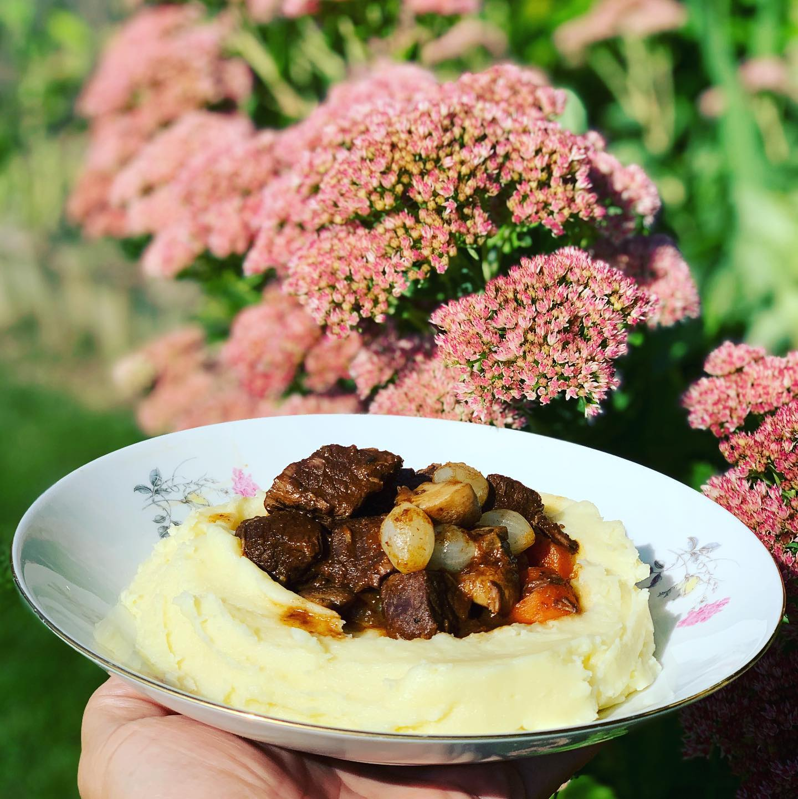

Jelenie ragú podľa @julia_family_food — Normy Jedál
Burgundy Venison Stew 👍👍👍👍
.
.
.
#venison #venisonrecipes #venisonstew #burgundy #cooking #cookingathome #cookingtime #cookingtips #foodie #foodiesofinstagram #foodlover #foodporn #tastyfood #foodphotography #foodphoto #foodblogger #fitfood #healthyfood #healthyfoodshare #jelenieragu #szarvasragu #obed#ebéd #lunch #lunchtime #varimdoma #dnesjem #dnesjim #finomság #mojejedlo